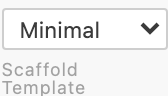

Customizing Generated Files with Scaffold Packs¶
A scaffold pack controls which files IPCraft generates and where it puts them. Use one when the built-in file layout does not match your project.
A pack contains:
scaffold.yml, which lists the output files;- optional
.j2templates, which describe their contents.
.j2 files use Nunjucks, a template language that replaces names such as
{{ name }} with values from the current IP core.
Choose a pack¶
IPCraft includes these packs:
| Pack | Use it when |
|---|---|
builtin-minimal |
You need one empty top-level HDL file |
builtin-ipcraft |
You want the complete IPCraft RTL structure |
example-register-only |
Your project already has most RTL and needs only register decoding |
example-no-regfile |
You want IPCraft's structure but will write the register decoder yourself |
example-with-docs |
You also want generated Markdown register documentation |
Open an .ip.yml file and select a pack from Scaffold Template in the
editor toolbar.

The selection is saved with the IP core. If the file does not choose a pack,
IPCraft uses the workspace setting ipcraft.generate.scaffoldPack, followed by
builtin-minimal.
flowchart TD
A{Pack saved in .ip.yml?} -->|Yes| B[Use that pack]
A -->|No| C{Workspace setting set?}
C -->|Yes| D[Use workspace pack]
C -->|No| E[Use builtin-minimal]Preview a template¶
- Open a
.j2file. - Run IPCraft: Preview Template Output from the Command Palette or editor title bar.
- Choose an
.ip.ymlfile if the workspace contains more than one. - Save the template to refresh the preview.
The preview is read-only. Use IPCraft: Pin Preview IP Core to change which IP core supplies the preview data.
Create a pack from a built-in pack¶
This is the simplest way to begin:
- Run IPCraft: Export Built-in Scaffold Pack.
- Select the closest built-in or example pack.
- Enter a short folder name, such as
aurora-rtl. - Open the exported
scaffold.yml.
IPCraft writes the copy under:
.vscode/ipcraft/packs/aurora-rtl/
├── scaffold.yml
├── top.vhdl.j2
├── top.sv.j2
└── ...
The Scaffold Pack Preview beside scaffold.yml shows the resulting file tree:
rtl/
├── spi_controller_pkg.vhd generated
├── spi_controller.vhd generated
├── spi_controller_core.vhd protected
└── spi_controller_regs.sv skipped: condition is false
- generated means IPCraft will write or replace the file;
- protected means IPCraft writes it once and then leaves it alone;
- skipped means the file's condition does not match the current IP core.
Create a small pack from scratch¶
Create this directory:
.vscode/ipcraft/packs/my-pack/
├── scaffold.yml
├── top.vhdl.j2
└── top.sv.j2
Add a manifest:
name: "my-pack"
description: "One top-level HDL file"
fullGeneration: false
files:
- source: "top.vhdl.j2"
target: "rtl/{{ name }}.vhd"
condition: "not is_systemverilog"
- source: "top.sv.j2"
target: "rtl/{{ name }}.sv"
condition: "is_systemverilog"
Then select my-pack from Scaffold Template and generate the project.
Manifest fields¶
| Field | Required | Meaning |
|---|---|---|
name |
Yes | Pack name shown by IPCraft |
description |
No | Short explanation shown in the preview |
fullGeneration |
No | Gives generated tests the complete register and bus data when true. A full-generation pack that declares testbench-like output and its own build/run entry point owns the complete output tree, so IPCraft does not append framework, docs/, altera/, or xilinx/ files |
generateFrameworkTestbench |
No | Explicitly enables or suppresses IPCraft's tb/* and .vscode/settings.json framework testbench output. When omitted, it remains enabled for compatibility unless the pack owns the complete output tree |
requirements |
No | Input compatibility this pack needs — see below |
generation |
No | Generation defaults this pack prefers — currently indentation — see below |
files |
Yes | Output rules |
files[].source |
Yes | Template to render |
files[].target |
Yes | Output path, relative to the generated project |
files[].condition |
No | Generate only when the expression is true |
files[].managed |
No | Replace on later runs unless set to false |
files[].executable |
No | Set the POSIX executable bit after writing the file |
Use managed: false for files that users are expected to edit. IPCraft creates
the file on the first run and does not replace an existing copy later.
- source: "core.vhdl.j2"
target: "rtl/{{ name }}_core.vhd"
managed: false
Use executable: true for pack-owned helper scripts that must be runnable
directly (./script.sh) instead of only via bash script.sh. IPCraft sets
the owner/group/other execute bits after writing the file, without touching
any other permission bit already present. This has no effect on filesystems
that don't support POSIX permission bits (e.g. some Windows/exFAT mounts) —
ipcraft verify compares file content only and never reports a mode-only
difference as stale.
- source: "qsys_tb_gen_sh.j2"
target: "qsys/qsys_{{ name }}_tb_gen.sh"
executable: true
Declare input requirements¶
A pack that only makes sense for certain IP cores can declare requirements in
scaffold.yml. IPCraft checks these before rendering any file — an
incompatible IP core fails generation with a clear reason instead of
producing a partial or invalid file tree.
requirements:
hdlLanguages:
- vhdl
busTypes:
- avmm
memoryMappedSlave: required
logicalPorts:
- address
- read
- write
- writedata
- readdata
| Field | Meaning |
|---|---|
hdlLanguages |
HDL languages this pack supports (vhdl, systemverilog) |
busTypes |
Bus type ids this pack supports (axil, axi4, avmm, axis, avst) |
memoryMappedSlave |
required or forbidden — whether the IP core must (not) have a memory-mapped slave interface |
logicalPorts |
Logical port names (case-insensitive) that must be active on the primary bus interface — useful for buses such as Avalon-MM where every port is optional, so an interface with no enabled ports would otherwise render with no signals |
Omitting requirements entirely (or any field within it) imposes no
constraint on that dimension — existing manifests keep working unchanged.
Declare an indentation default¶
A pack can declare its own preferred indentation for generated HDL and synthesis-tool source files, so a workspace with several packs for different consumers (for example, an internal RTL pack that wants four spaces and a vendor-delivery pack that wants tabs) doesn't need the user to change workspace settings or remember pack-specific CLI flags between runs.
generation:
indentation:
style: tab
generation:
indentation:
style: spaces
size: 4
| Field | Meaning |
|---|---|
style |
spaces or tab |
size |
Spaces per indentation level. Ignored when style is tab |
Indentation is resolved independently per field, in this precedence order:
- An explicit CLI flag or programmatic run option (
--indent-style,--indent-size, or the equivalent explicitGenerateOptionsvalue) - The selected scaffold pack's
generation.indentationvalue - VS Code workspace/user defaults (
ipcraft.generate.indentStyleandipcraft.generate.indentSize) - The built-in fallback (
spaces, size2) when no VS Code configuration is available, such as headless library use
A pack may set only style, only size, or both — an omitted field falls
through to the next tier. An invalid style or size fails pack loading
with an error naming the pack and the offending field; omitting
generation or generation.indentation imposes no pack-level default, so
existing manifests are unaffected. ipcraft generate and ipcraft verify
resolve indentation identically for the same pack and flags.
How templates are found¶
IPCraft checks the selected pack first and then the built-in template library. You only need to copy templates you want to change.
flowchart LR
A[Output rule] --> B{Template in selected pack?}
B -->|Yes| C[Render custom template]
B -->|No| D{Built-in template exists?}
D -->|Yes| E[Render built-in template]
D -->|No| F[Report missing template]The same rule applies to Cocotb and vendor project templates. A custom
component.xml.j2 is different: it replaces the complete Vivado component
file, not part of it.
Common template values¶
The complete list is in the generator reference. These values cover most small packs:
| Value | Meaning |
|---|---|
name |
IP core name |
is_systemverilog |
true for SystemVerilog output |
has_memory_mapped_slave |
The core has a memory-mapped slave interface |
bus_type |
Short bus name such as axil or avmm |
registers |
Registers sorted by address |
user_ports |
Ports that are not part of a bus |
generics |
IP core parameters |
Common conditions are:
condition: "not is_systemverilog"
condition: "is_systemverilog"
condition: "has_memory_mapped_slave"
condition: "includeRegs and has_memory_mapped_slave"
Verify the pack¶
Before sharing a pack:
- Preview every changed template.
- Check generated and skipped files in the file-tree preview.
- Generate both supported HDL languages when applicable.
- Compile the generated HDL.
- Run the generated tests.
For a complete example, follow Build and verify your own scaffold pack.
Troubleshooting¶
| Problem | Check |
|---|---|
| Pack not found | Folder name and .vscode/ipcraft/packs/<name>/scaffold.yml |
| Template not found | The resolved source name in the pack or built-in library |
| File always skipped | Its condition in the Scaffold Pack Preview |
| Preview has no IP core | Create an .ip.yml file or pin an existing one |
| Preview does not refresh | Save the .j2 file |
| Protected file is replaced | Confirm the rule has managed: false and the file already exists |